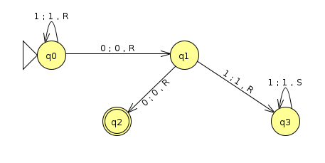
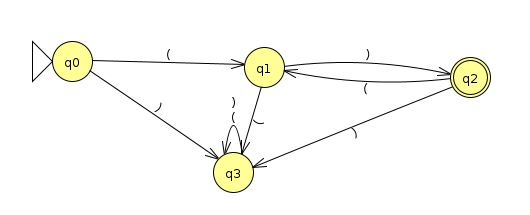

Homework 8: (Un)Decidability (18 Points)
Chris Tralie
Overview / Logistics
In this homework we'll explore decidability: the property of a language that guarantees that it is both Turing recognizable and that it will never throw the Turing machine into an infinite loop. In the process, we'll also think about languages that are not decidable.
There are no JFLAP problems on this homework. You should submit a single typed document with the answers to each question. You can use Microsoft Word, LaTeX, or anything else you're comfortable with.
Problem 1 (3 Points)
Consider the following Turing machine M (Click here to download the JFLAP file)
Now consider a universal turing machine H that takes as input <M, s>, where <M> is a string encoding of the above turing machine (which is different from H) and s is an input, and H accepts if M halts on s and rejects if M loops on s (we know that such a machine can't exist, but for the purposes of this problem, we'll pretend that it does). Assuming a 6-tuple representation of a turing machine (Q, Σ, Γ, δ, q, F), where Σ is the input alphabet and Γ is the tape alphabet, devise examples of the following 3 inputs
- An input where H accepts and M accepts s
- An input where H accepts and M rejects s
- An properly formatted input where H rejects (i.e. M is encoded properly in its string representation as a tuple)
You can encode a transition rule in string format as a tuple
\[ (q_i,a,q_j,b,\{L,S,R\}) \]
which reads a machine in state qi with an a at its head write a b to the tape, transitions to state qj, and either moves left/stays/moves right.
Problem 2 (3 Points)
Prove that the language
B = { < M > | M is a DFA which doesn't accept any binary strings divisible by 3 }
Is decidable. For example, the machine below is in B, since it rejects everything except for the string 1, and 1 is not divisible by 3.

Hint: Recall that the language EDFA(<M>), which accepts if the DFA M does not accept any strings, is decidable (see theorem 4.4 in the book). Use a decider for EDFA as a subroutine to help you in this problem.
Problem 3 (3 Points)
Prove that the language
P = { < M > | M is a DFA over the alphabet Σ={(,)} that accepts at least one string with balanced parentheses }
is decidable. For example, the machine M below, which accepts all of the strings of the form ()()()..., is in P
Hint: Use the fact that the intersection of a context free language and a regular language is context free. Then use theorem 4.8 in the book that ECFG is decidable.
Problem 4 (3 Points)
Prove that the language
\[ \{ <M> | M \text{ is a DFA rejecting finitely many strings} \} \]
Hint: Put yourself in a pumping mindset here, and argue that a DFA with k states rejects infinitely many strings if and only if it rejects a string with a length between k and 2k
Problem 5 (3 Points)
Consider the language L of turing machines M that have the property that if M accepts w, then M also accepts the reverse wR. Show that L is undecidable
Hint: You can use a very similar trick to the proof that ETM is undecidable; that is, create an auxiliary machine that you can show could be used to decide ATM if you feed it to a decider for L. Alternatively, you can argue that the conditions for Rice's theorem are fulfilled.
Problem 6 (3 Points)
Define a useless state in a Turing machine as a state that is never reached on any possible input to the machine. It would be nice to detect and remove these states for a more parsimonious Turing machine. Unfortunately, the language
LU = { <M, q> | q is a useless state in M}
is undecidable. Prove this by contradiction by showing that LU can be used to decide ETM.
NOTE: This has some important practical implications, as it is basically the turing machine version of code coverage